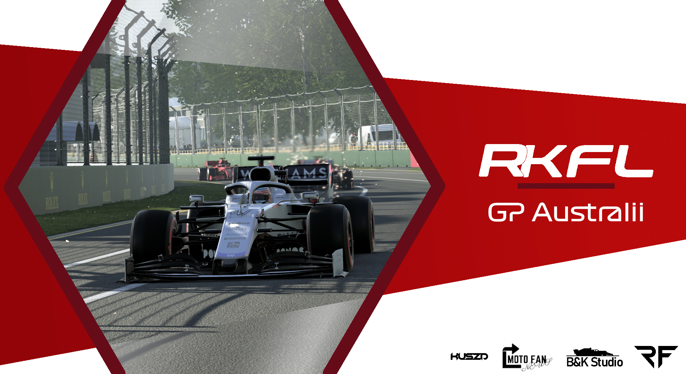

Podsumowanie GP Australii

Po ciekawym wyścigu w splicie drugim przyszedł czas na split pierwszy, który w tym sezonie jest mocny jak nigdy.
Udowodniły to kwalifikacje i czas FREVKYEGO, który wykręcił znakomity czas 1:18.831. Co ciekawe różnica pomiędzy pierwszym a dziewiątym miejscem wynosiła zaledwie sekundę.
Nadszedł czas na wyścig, kierowcy ustawili się na polach startowych. Znakomicie wystartował Skiadr, który przebił się z czwartego miejsca na pierwsze.
Reszta stawki pokonała początek wyścigu dosyć spokojnie, jedynie Kuba wpadł w poślizg w drugim zakręcie i zgarnął ze sobą Ivo na pobocze.
Dalsza część rywalizacji to bardzo ciekawa walka na torze. Kierowcy często zamieniali się pozycjami,
ale kluczowym momentem był wyjazd samochodu bezpieczeństwa na 24 okrążeniu. Wyścig można powiedzieć zaczął się od początku.
Przez tę parę kółek działo się bardzo dużo, sypały się kary, dochodziło do kolizji, ale zwycięsko z tej walki wyszedł Miroirm, za nim uplasował się MKD,
który startował z odległego trzynastego pola, a pomimo tego udało mu się stanąć na podium, które dopełnił Skiadr.
Zapis słowny konferencji:
Synal3k: Ivo, fenomenalny wyścig, pięć pit-stopów dostajesz dwa punkty za pozycje dziesiątą i za najszybsze okrążenie w wyścigu. Jak Ci się jechało? Opowiadaj
Ivo: No kwale były w miarę dobre jak na poziom stawki. W pierwszym zakręcie klasycznie, z moim szczęściem, przede mną obróciło się Ferrari w które wjechałem. Musiałem zjechać do boksu. Potem miałem parę przygód, parę pit-stopów. Ogólnie plan był taki żeby potrenować trochę mechaników przed kolejnymi wyścigami, bo na testach przedsezonowych sobie nie radzili zbytnio z pit-stopami, więc potrenowaliśmy. Czasy coraz lepsze pit-stopów także myślę, że w następnym wyścigu już będzie wszystko dobrze.
Synal3k: Dziękujemy bardzo, tak właśnie wyglądało GP Australii z Twojej perspektywy. Serdeczne gratulacje zdobycia kierowcy dnia, zdobycia dzisiaj sympatii widzów. Serdeczne gratulacje najszybszego okrążenia wyścigu i dwóch punktów w dzisiejszym wyścigu. A my przejdziemy do Skiadra czyli do zdobywcy trzeciej pozycji. Skiadr co tam dzisiaj u Ciebie się działo? Start chyba dobry bo walka tam na czele stawki i trzecia pozycja na końcu. Opisz nam z Twojej perspektywy co u Ciebie słychać.
Skiadr: Pierwszy stint na softach był bardzo dobry, start wręcz niesamowicie mi wyszedł żeby zdobyć już przed pierwszym zakrętem prowadzenie w wyścigu. Potem potrafiłem utrzymać się z przodu przed rywalami i po pierwszym safety carze. Ale wszystko zaczeło się psuć troszeczkę jak już zjechałem po świeże medy. Nie tylko Korwin przede mną ale także Freaky który był bardzo blisko mnie i stwarzał zagrożenie. Stało się co się stało, jeden z wolniejszych kierowców, którzy chyba jeszcze nie zjechali choć nie wiem, nie zostawił mi zbyt dużo miejsca i wylądowałem w bandzie. W prawdzie mogłem być troszeczkę bardziej zachowawczy próbując go wyprzedzać ale Freaky na mnie naciskał i chciałem zakończyć ten manewr tak wcześnie jak się tylko da. Niestety nie wyszło i wylądowałem w bandzie, przednie skrzydło urwane i to chyba spowodowało drugi safety car, nie wiem czy były jakieś inne wypadki na torze w tym czasie. Nawet nie miałem świeżych medów żeby założyć podczas safety cara, więc założyłem hardy. Biorąc to wszytko pod uwagę trzecie miejsce jest bardzo dobrym wynikiem.
Synal3k: Oczywiscie że tak, patrzyliśmy na ten Twój incydent. Tak na prawdę mówiliśmy już, że totalnie skończony wyścig dla Ciebie a tu proszę jednak podium. Także piętnaście punktów na inauguracje sezonu ląduje na Twoje konto. Serdeczne gratulacje. Przechodzimy teraz do MKD, czyli do zdobywcy pozycji numer dwa. Do kierowcy który przebił się dzisiaj, teraz żeby nie skłamać, albo o jedenaście albo o trzynaście pozycji w górę. Nie wiem może Ty wiesz MKD, może nie wiesz.
MKD: O jedenaście.
Synal3k: O jedenaście. W każdym bądź razie ich jest pełno. Na prawdę genialny wyścig dzisiaj.
MKD: Dziękuję.
Synal3k: Samochody bezpieczeństwa chyba jednak trochę pomogły? Jak to tam wyglądało?
MKD: Samochody bezpieczeństwa na pewno pomogły bo wydaje mi się, że gdyby nie one to takie maksimum to byłoby może piąte miejsce ale to na prawdę musiałbym się sporo napocić. Co do wyścigu kwalifikacje zepsułem bo na moim okrążeniu zjazdowym się rozwaliłem po prostu. Najbardziej chyba idiotyczne kwalifikacje w moim życiu. W wyścigu starałem się po prostu unikać jakoś tłoku żeby w nikogo nie wjechać. Nie mieć jakiś kontaktów na starcie i widać, że to się opłaciło. Równe tempo i ostatecznie druga pozycja. Nie mogę narzekać na pewno.
Synal3k: Rozumiem, także tutaj również serdeczne gratulację dla Ciebie za zdobycie tej drugiej pozycji i za, w końcu, tyle przebić. To nie jest jednak takie proste żeby tutaj jedenaście pozycji przebić się w trakcie wyścigu i też gratulację zdobycia tego podium dzisiaj. Przechodzimy do MiroriM’a. Do zdobywcy, do zwycięzcy dzisiejszego wyścigu. Inauguracyjnego wyścigu splitu pierwszego ligi Robert Kubica Fans League na sezon szósty! Proszę bardzo, MiroriM co tam dzisiaj u Ciebie się działo? Ten pierwszy samochód bezpieczeństwa, zjazd na hardy, zamieszałeś troszeczkę tą strategią co się chyba opłaciło.
MiroriM: Wiesz co Ci powiem będę dużo narzekał, bo zacznijmy od tego, że Skiadr to w ogóle dwie sekundy wcześniej wystartował przez desynchro hosta ale to już tam, że tak powiem, zostawię. Nie będę tego tematu przedłużał po wyścigu. Co do tego safety cara pierwszego gdzie tam zjechałem na piątym okrążeniu na hardy to plan był dojechać do końca. Moim zdaniem takie rozwiązanie było najlepsze żeby właśnie do końca wyścigu dojechać na tych oponach i to się sprawdzało. Byłem już na drugim miejscu gdy wyjechał drugi safety car, który już mi plany dosyć mocno pokrzyżował bo po pierwsze gdyby nie było żadnych safety carów to bym jechał pierwszy z przewagą jedenastu sekund i bez problemu udałoby mi się dowieźć te zwycięstwo, a podczas tego safety cara dostałem dwie kary, 3s w ogóle jakieś bezsensowne na wjeździe do pitu. Potem jeszcze te 5s za lekki kontakt z MKD przy restarcie. Nie wiem czy się będę od tego odwoływał ale to takie dwie głupie kary, które mogły mnie pozbawić zwycięstwa. Mimo tego że wygrałem nie czuje się jakoś specjalnie dobrze z tym dzisiejszym wyścigiem ale zawsze te 25 punktów jest na sam start sezonu, więc spoko.
Synal3k: No właśnie, 25 punktów jednak dopisujesz do tego konta. Może wyścig nie był zbyt, tak jak to opisałeś, najlepszym ale jednak właśnie wyniki się liczą i właśnie te 25 punktów na start sezonu na pewno bierzesz w ciemno. Także powodzenia panowie wszystkim. Tobie oczywiście gratulacje MiroriM za zwycięstwo. Gratulacje wszystkim dzisiaj i powodzenia Wam życzę oczywiście na kolejnej rundzie Waszego splitu. Tak naprawdę splitu pierwszego jakże całej ligi. Ten kalendarz jest ogólnie, oczywiście, dostępny, a kolejne grand prix będą to…
Ivo: Chiny.
Synal3k: Chiny, także na Szanghaju powodzenia Wam panowie. I do usłyszenia już właśnie, miejmy nadzieję, niebawem. Możecie się rozchodzić.
Tak zakończyła się rywalizacja na torze jednak ostateczne wyniki poznaliśmy dopiero dwa dni później po werdyktach sędziowskich.
Poniżej prezentujemy oficjalne wyniki: